Geometry and Trigonometry¶
This chapter contains useful stuff that aren’t too difficult to get started with. You’ll find it especially useful if you like writing games.
Basic Angle Stuff¶
Problem
The ball of a ball-and-paddle game is moving at the angle of 30° and it hits a wall at right. How should the angle change?
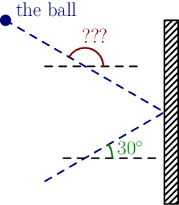
Here ° is the degree sign, and 30° means 30 degrees. Degrees work so that 360° is a full turn, 180° is a half turn, 90° is a quarter and so on. It’s also possible to measure angles in radians, but we’ll look into that later.
Note that both angles are measured up from a horizontal line. Measuring them like that is a standard that this tutorial uses and people are familiar with. You can also measure angles that go down like that; for example, 270° would be straight down (that’s 90° less than a full turn).
We can solve our problem by taking the 30° angle sign and moving it like this:
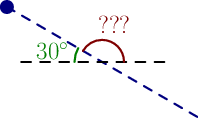
Now you can see that the angles add up to half turn (or 180°), so we get this equation:
In math it’s common to use a letter instead of “???” to represent an unknown value. For example:
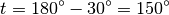
Exercise
Calculate similar things when the ball hits a wall at left, top or bottom. Don’t be arfaid to deal with angles between 180° and 360°.
Trig (aka trigonometry) with the Unit Circle¶
Problem
A player moves to top-right at the angle of 60° measured from the x axis at 10 pixels per second. How many pixels should the player’s x and y change every second?
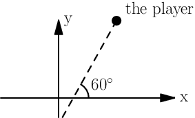
Note that the y axis goes up in math so higher means bigger, but in programming it’s usually upside down.
Our problem has something to do with sine and cosine. The unit circle is a circle with radius 1 placed in the middle of the xy plane. Here’s a picture that shows what sine and cosine are:
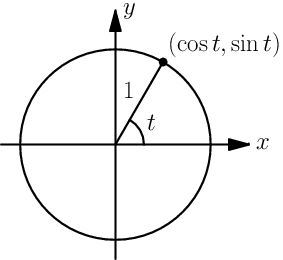
This is really quite simple: the x coordinate is  and the y
coordinate is
and the y
coordinate is  . But the radius of the unit circle is 1 instead
of our 10, so we need to multiply everything by 10 to scale it up. We get this:
. But the radius of the unit circle is 1 instead
of our 10, so we need to multiply everything by 10 to scale it up. We get this:
player.x += 10*cos(60)
player.y += 10*sin(60)
Based on the unit circle,  should be somewhere between 0 and 1 since
the height of the x axis is 0 and the circle’s top is at 1 (the radius is 1).
But if we try this out in Python, something is wrong:
should be somewhere between 0 and 1 since
the height of the x axis is 0 and the circle’s top is at 1 (the radius is 1).
But if we try this out in Python, something is wrong:
>>> import math
>>> math.sin(60)
-0.3048106211022167
Now you’re feeling really WTF. The angles with negative sines should be below the x axis, e.g. something between 180° and 360°.
The problem is that Python, Haskell, C and most other programming languages use radians by default instead of degrees. Let’s convert 60° to radians so the sine function is happy:
>>> math.sin(math.radians(60))
0.8660254037844386
>>> math.cos(math.radians(60))
0.5000000000000001
That’s more like it. 0.5000000000000001 is obviously not an accurate
result, but it’s good enough for a programmer while a mathematician would say
that  and
and  . I might write
more about radians, how the heck I came up with those mathy-accurate values and
how my conversion functions work some day.
. I might write
more about radians, how the heck I came up with those mathy-accurate values and
how my conversion functions work some day.
In most programming languages, functions like sin and cos take radians
as arguments, but also note that some functions (like atan2, see below)
return radians.
Trig with a Triangle¶
Problem
A player moves 10 pixels up and 20 pixels right. What angle is that?
Here’s another way to define  and
and  , and another function called
, and another function called
 that we haven’t used before.
that we haven’t used before.
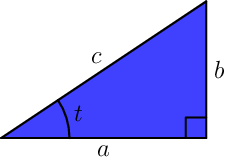
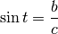
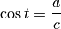
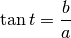
These things only work if the triangle has a 90° corner, and the little box at bottom right means that the corner is 90°. These definitions are compatible with the unit circle stuff above; see this.
So now we know that  and
and  . Let’s figure out how to calculate
. Let’s figure out how to calculate  from those:
from those:
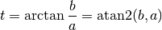
Here  is the inverse of , so
is the inverse of , so  . Most
programming languages have an
. Most
programming languages have an atan(x) function that returns  ,
but I don’t recommend using it in this case; the
,
but I don’t recommend using it in this case; the atan2(b,a) function
returns  and I recommend it instead.
and I recommend it instead. atan2 looks at the
signs of  and
and  and does the right thing if they’re negative (the player
is moving to e.g. bottom left). It also works if
and does the right thing if they’re negative (the player
is moving to e.g. bottom left). It also works if a is 0 and b/a would
fail as division by zero is undefined.
Note
Usually people like to put  before
before  in different kinds of places, but
in different kinds of places, but
atan2 is used like atan2(y_change, x_change), not like
atan2(x_change, y_change).
Finally, it’s time to calculate our stuff:
>>> from math import atan2, degrees
>>> degrees(atan2(10, 20))
26.56505117707799
Pythagorean Theorem¶
Problem
A player moves 10 pixels up and 20 pixels right, just like in the previous problem. How many pixels is that in total, measured diagonally?
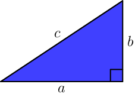
Here’s a handy equation, also known as the Pythagorean theorem:

Again, the triangle’s corner between a and b must be 90° like it is in the image. If you’re wondering how the heck it works see this proof.
Let’s solve  from the equation by applying
from the equation by applying  on both sides:
on both sides:

Here  is the absolute value. The last step assumes
is the absolute value. The last step assumes  ,
but that’s not a problem because a triangle with a negative side length doesn’t
make much sense.
,
but that’s not a problem because a triangle with a negative side length doesn’t
make much sense.
“Hypotenuse” is a fancy word that means the longest side of a triangle with a
90° angle, and that’s why some programming languages have a hypot(a, b)
function that returns  .
.
Let’s calculate the distance:
>>> from math import hypot, sqrt
>>> hypot(10, 20)
22.360679774997898
>>> sqrt(10**2 + 20**2)
22.360679774997898
Exercise
Now you should know enough things to create a simple 2D
ball-and-paddle game where the player moves the paddle (with e.g.
arrow keys), and the ball bounces between the paddle and the corners
of the window. Use a library that lets you do the math yourself but
provides some basic things, like e.g.
draw_circle(centerx, centery, radius). Remember that the y axis
is “upside down” so you may need to add minus signs to the formulas.
My Python and PyGame implementation is here. There are quite a few things that must be taken care of, so remember that I created the above game in several small steps and I didn’t do it in a matter of minutes.
Vectors¶

A point is simply a pair of x and y coordinates, and a vector represents the
difference between two points. For example, if we have the points  and
and
 , the vector from A to B is
, the vector from A to B is
 . Here
. Here
 and
and  are vectors that go right and up by 1 unit, respectively.
are vectors that go right and up by 1 unit, respectively.
A vector like  can be also written as
can be also written as  . Use
whatever style you want.
. Use
whatever style you want.
We could also use vectors to do similar things as in the unit circle trig section. The advantage with vectors is that moving the player is really easy:
player.x += speed_vector.x
player.y += speed_vector.y
A disadvantage is that if we want to change the angle that the player moves at
by 1° we can’t just do moving_angle += 1. We’ll look into how this is done
below.
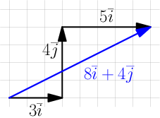
Another nice thing about vectors is that they can be +’ed together easily. For
example, if we first move 3 units to right, then 4 units up and finally 5 more
units to right, we move a total of 8 units to right and 4 units up. That’s how
 .
.

These vector calculations are just like the Pythagorean theorem and unit circle trig stuff above:


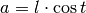
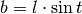
Example: if we move 1 unit to the right and 2 units up, our vector is  ,
its length is
,
its length is  and the angle is
and the angle is
 . On the other hand,
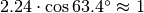 and 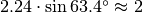.
. On the other hand,
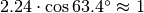 and 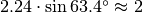.
One way to change the angle of a vector is to first convert it to a length and an angle, change that angle and create a new vector. It looks like this in pseudo-ish code:
length = hypot(speed_vector.x, speed_vector.y)
angle = atan2(speed_vector.y, speed_vector.x) + angle_change
speed_vector.x = cos(angle) * length
speed_vector.y = sin(angle) * length
Exercise
Create a Vector class in your favorite programming language that
represents . The class should implement a
Vector(x, y) constructor and the properties (or setters and getters if
you use e.g. Java) x, y, length and angle. Additionally, if
the programming language supports it, you can add a nice "Vector(x, y)"
string representation and operator overloading; e.g.
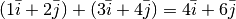, so
Vector(1, 2) + Vector(3, 4) == Vector(4, 6).
I found it easiest to implement things by storing only x and
y and calculating everything else as needed.
For example, here I’m playing with my Python implementation:
>>> v = Vector(1, 2)
>>> v # the string representation
Vector(1, 2)
>>> v.x
1
>>> v.y
2
>>> v.length
2.23606797749979
>>> math.degrees(v.angle)
63.43494882292201
>>> v.angle = math.radians(45)
>>> v
Vector(1.5811388300841898, 1.5811388300841895)
>>> v.length # setting the angle didn't change this
2.23606797749979
>>> v.length = 0 # lol
>>> v
Vector(0.0, 0.0)
My code is here. I didn’t add operator overloading because I wanted to keep the implementation simple and easy to read.